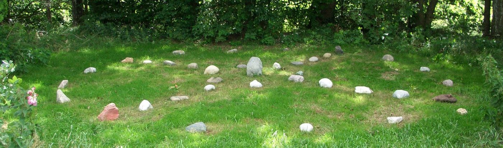
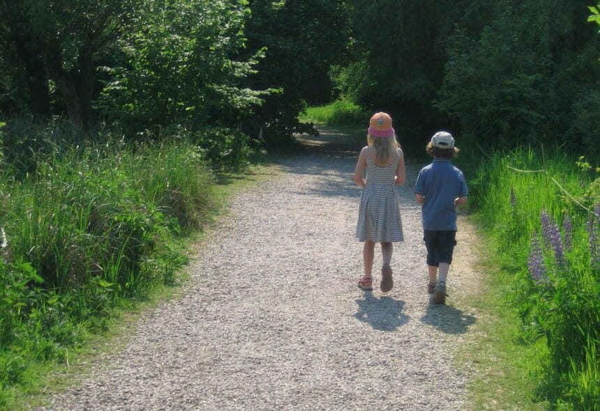

Schule der Entfaltung
Hier finden Sie eine Übersicht der heilenden Kursangebote und der intensiven Selbstfindungsseminare in meiner seit vielen Jahren mit Herzblut betriebenen Schule der Entfaltung.
Erforschung und Vertiefung der eigenen Regulations- und Transformationskraft, Resilienztraining, Naturcoaching und Verbesserung der Beziehungsfähigkeit: auf verschiedenen Wegen sich selbst und den Sinn des Lebens finden, um Klarheit und Fülle ins eigene Leben und in die Beziehungen zu bringen.
-

Das Medizinrad
Naturheilung für Körper, Geist und Seele. Ein 1,5-jähriger Kurs mit ritualgestützter Begleitung, Lebensrädern und dem 4-Schilde-System.
-
Ganzheitliche Aufstellungsarbeit
Heilung im Kreis: tieferliegende Ursachen von körperlichen und seelischen Beschwerden finden und auflösen, mit überlieferten Heilsymbolen.
-

Heilende Kommunikation
Wertschätzende, achtsame und wahrhaftige Kommunikation und die Kunst des Zuhörens — eine Notfallapotheke für jede Art von Beziehung.
-
Lebensziele & Visionen
Ein Kurs für Menschen, die ihre Herzenswünsche entdecken und sie wirklich leben wollen — in vier Wochenendblocks.
-
Groll & Schuldgefühle lösen
Eine klärende Methode der Selbsterforschung aus dem holistischen Wachstumsyoga, um sich nachhaltig von Groll und Schuldgefühlen zu lösen.
-
Wachstumsyoga
Intensiv und achtsam leben: den zentralen Lebensfragen zuwenden und das eigene Leben vor diesem Hintergrund klären.